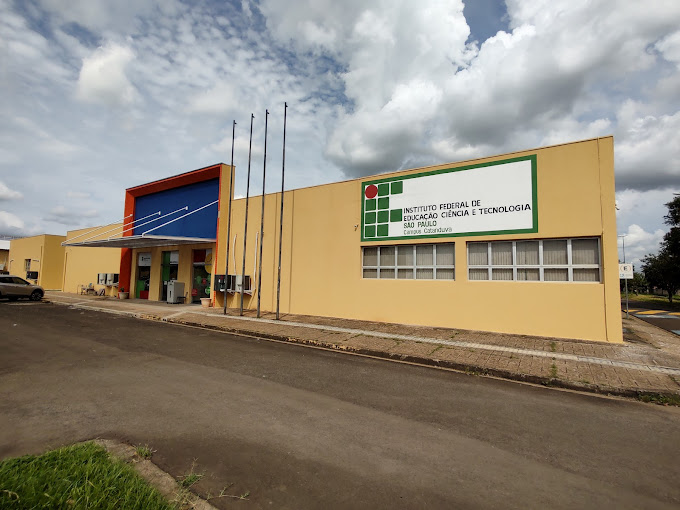

Estude no IFSPO Instituto Federal de Educação, Ciência e Tecnologia de São Paulo (IFSP) é uma autarquia federal vinculada ao Ministério da Educação (MEC), especializada na oferta de Educação Profissional e Tecnológica (EPT), criada por meio da Lei nº 11.892, de 29 de dezembro de 2008, que também instituiu a Rede Federal de Educação Profissional, Científica e Tecnológica, da qual o IFSP é integrante. Ainda que vinculado ao MEC, o IFSP detém autonomia administrativa, patrimonial, financeira, didático-pedagógica e disciplinar, nos termos do Art. 1º, Parágrafo único, da Lei nº 11.892/2008. |
 |